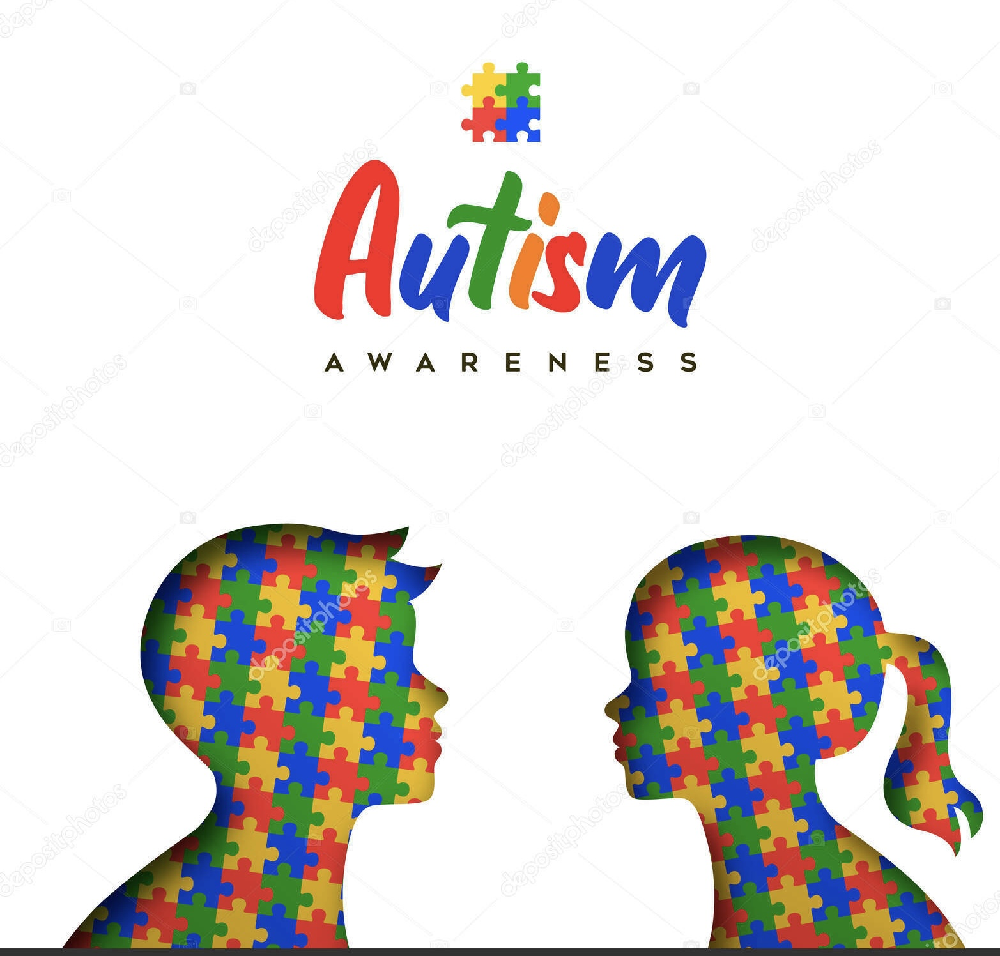

Välkomen till Autismcenter
Barn med Autism
Autism är en funktionsnedsättning som påverkar hur ett barn kommunicerar och umgås med andra. Barn med autism kan uppleva världen på ett annorlunda sätt.Autism är ett tillstånd, vilket betyder att varje barn med autism är unkit.De har svårt att prata och vara umgås med andra.De har speciella intressen och beteende.De är mest känslig för ljud,ljus och beröring.

Hur kan vi hjälpa♥
Det är viktig att barnen få hjälp tidigare.Tidig stöd kan göra stor skillnad i barnets liv.Man kan andvända bilder och scheman för att hjälpa barnet förstå vad som hända.En tydlig och förutsägbar vardag kan göra att barnet känner sig tryggt.Anpassa aktiviteter efter vad barnet gillar och behöver.Tydlig kommunikation och enkelt prat ge baretn tid att förstå
Samarbete med Familjer
Det är viktigt att samarbeta med familjerna för att förstå och stötta barnet på bästa sätt.Tillsammans kan man skapa en positiv miljö där barnet kan växa och utvecklas.